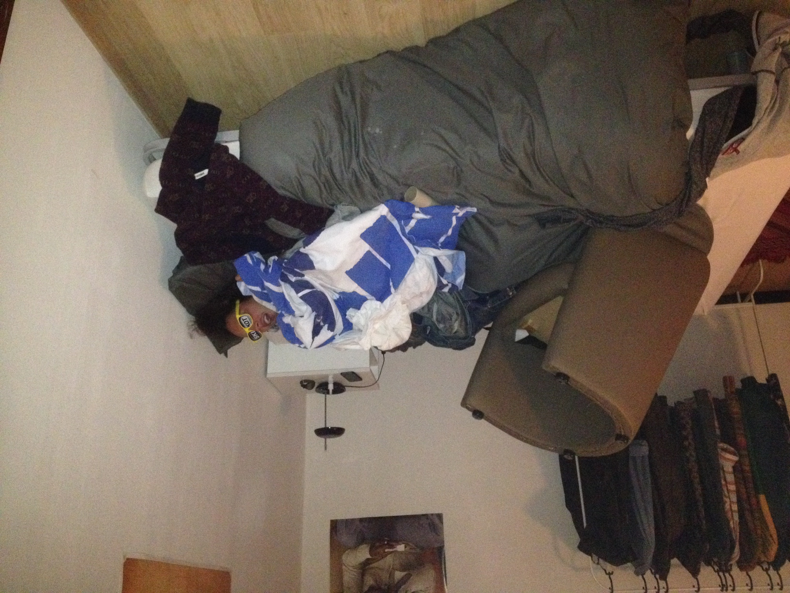
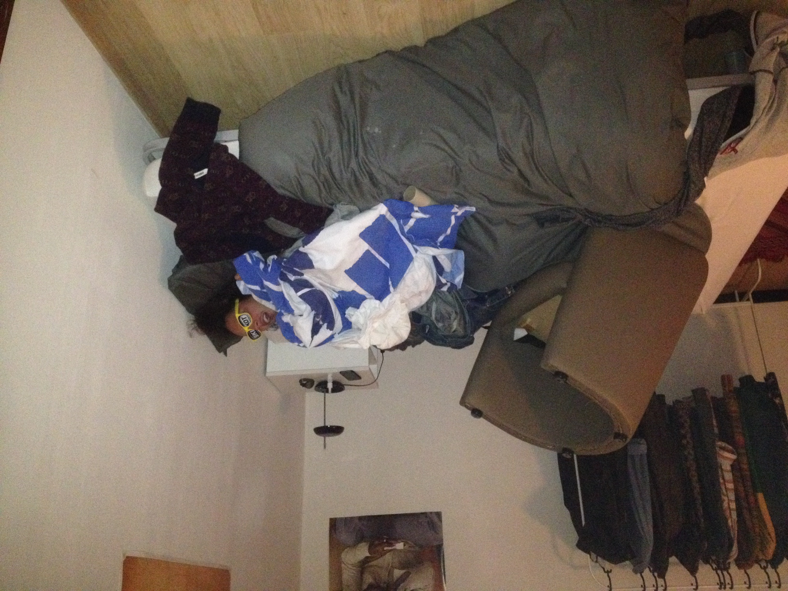

Titel van die shmee
Argentinië - Buenos Aires
30/05/2024 - 05/06/2024
Argentinië heeft een rijke literaire geschiedenis en een van de actiefste uitgeverijindustrieën in de regio. Argentijnse schrijvers nemen een prominente plaats in in de Latijns-Amerikaanse literatuur sinds de jaren 1850. De strijd tussen de Federalen en de Unionisten, zette de toon voor de Argentijnse literatuur van die tijd.[10]
De ideologische kloof tussen het gaucho epos Martín Fierro van José Hernández en Facundo van Domingo Faustino Sarmiento is een goed voorbeeld. Hernández, een federalistis, was tegen de centraliserende, modernisering en Europese tendensen. Sarmiento schreef ter ondersteuning van de immigratie als de enige manier om Argentinië te redden van het worden onderworpen aan de regels van een klein aantal dictatoriale caudillo families, met als argument dat dergelijke immigranten Argentinië meer modern en open zouden maken voor West-Europese invloeden en een meer welvarende samenleving.[11]
De Argentijnse literatuur van die periode was met name nationalistisch. Het werd gevolgd door de modernistische beweging, die in Frankrijk ontstond in de late 19e eeuw. Deze periode op zijn beurt werd gevolgd door de Avant-garde met Ricardo Güiraldes als een belangrijke referentie. Jorge Luis Borges is de meest geprezen schrijver van Argentinië, vond nieuwe manieren van kijken naar de moderne wereld in metaforen en filosofische debatten en zijn invloed heeft zich uitgebreid naar schrijvers over de hele wereld. Borges is het meest bekend om zijn werk in korte verhalen, zoals Ficciones en El Aleph.
De Argentijnse literatuur is de basis van het literaire werk dat wordt geproduceerd in Argentinië. Een aantal van de belangrijkste schrijvers, dichters en intellectuelen van het land is: Juan Bautista Alberdi, Roberto Arlt, Enrique Banchs, Adolfo Bioy Casares, Jorge Luis Borges, Silvina Bullrich, Eugenio Cambaceres, Julio Cortázar, Esteban Echeverría, Leopoldo Lugones, Eduardo Mallea, Ezequiel Martínez Estrada, Tomás Eloy Martínez, Victoria Ocampo, Manuel Puig, Ernesto Sábato, Osvaldo Soriano, Alfonsina Storni en María Elena Walsh.
 
